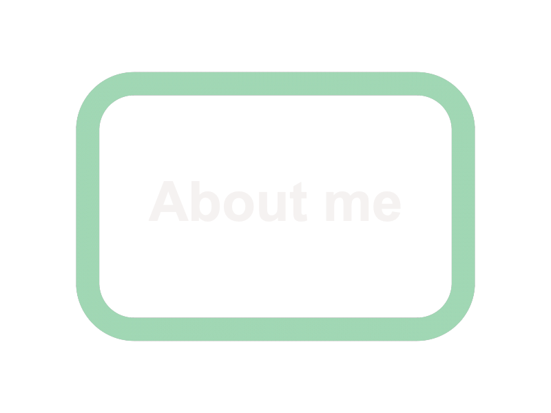

|
 |
 |
Hunah Touma's site!
This is the homepage. Here I hope to explain how and why I decided to take programming. The main reason is that I had my own website but had to pay someone
for it. The website is my current business venture (can be found in the "about me" tab) and the thought is that I can train myself
to be better with fixing the site and possibly make apps or other sites. This is an exciting opportunity! Look at each tab and find an introductory
paragraph for each one (since we don't have enough work for me to actually elaborate on said work).
|